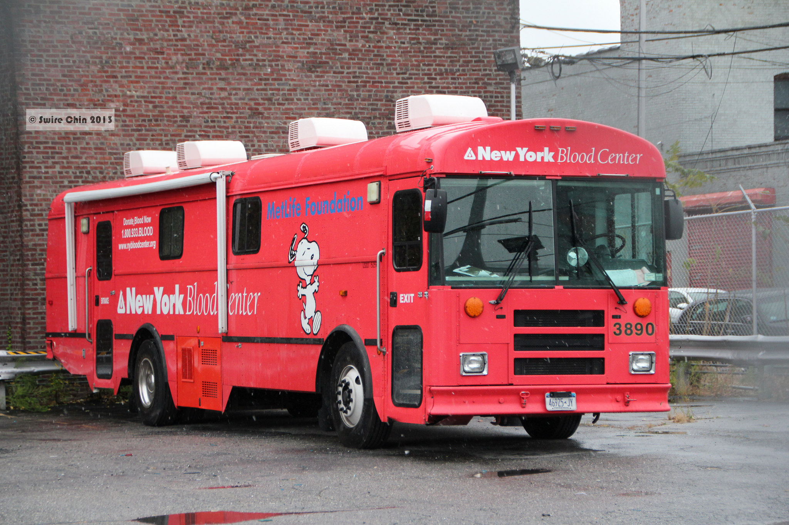

Paying people to do things is effective, but it can have these drawbacks.
Posted on April 1, 2018 by Gary Hsieh
Yes, money is indeed a powerful way to incentize people to do things. But numerous studies have also found drawbacks!
 https://flic.kr/p/iHCvFp
Studies have shown how paying people money can decrease their intrinsic motivation. Titmuss (1970) found that paying people money for blood donation actually negatively affected donation. Deci & Ryan (1999) has also built up a body of work that’s shown how paying people "crowds-out" their intrinsic motivations for doing the action, because of the shift in the locus of control (lessened belief that one can influence events and their outcomes).
https://flic.kr/p/48WuAD
Those who read Freakanomics have heard about the story of fining parents who show up late to pick up their kids at daycare. Gneezy (2000) found that doing so actually lead to more late-showing parents! The underlying explanation is that fining (or paying) people can change their orientation from that of communal to transactional. Instead of thinking about the social costs of showing up late, parents can now feel justified because they are paying for a service.
Similarly, we (2009) also found that paying people in an online Q&A service changes how they perceive the service. When there’s no payment, interactions are much more social. However, with payment, people focus more on providing high quality answers and there was less social interaction.
https://flic.kr/p/brd1K2
People are not all the same. We have different values and needs. It is not surprising then, that some people money value more than others. Thus, sing money as an incentive, may end up attracting a higher percentage of people who value money (Hsieh & Kocielnik 2016). This can be problematic if you want to attract those individuals who are not financially-oriented.
 https://pixabay.com/photo-3038325/
https://pixabay.com/photo-3038325/
Related to above, we also found that offering monetary incentives can turn away those who value the welfare of others (Hsieh & Kocielnik, 2016). This is especially true if the rewards are made public -- some people may not want to be perceived as those who are doing the activities solely for the pay (Ariely, Bracha, Meier, 2009).
Original research
The gift relationship. From human blood to social policy. The gift relationship.
Titmuss, R. M. (1970)
London: George Alien & Unwin Ltd.
A meta-analytic review of experiments examining the effects of extrinsic rewards on intrinsic motivation.
Deci, E. L., Koestner, R., & Ryan, R. M. (1999)
Psychological bulletin, 125(6), 627
A fine is a price.
Gneezy, U., & Rustichini, A. (2000)
The Journal of Legal Studies, 29(1), 1-17.
mimir: a market-based real-time question and answer service.
Hsieh, G., & Counts, S. (2009)
CHI.
You get who you pay for: The impact of incentives on participation bias.
Hsieh, G., & Kocielnik, R. (2016)
In Proceedings of the 19th ACM Conference on Computer-Supported Cooperative Work & Social Computing
Doing good or doing well? Image motivation and monetary incentives in behaving prosocially.
Ariely, D., Bracha, A., & Meier, S. (2009)
American Economic Review, 99(1), 544-55.